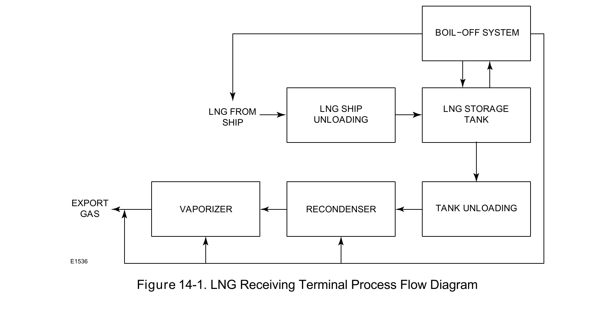

A Different Process, Same Material Constraint

A receiving terminal's real process sequence — ship unloading, vapor return, storage, send-out, regasification — is a materially different flow than liquefaction's refrigerant cycle, even though both operate at the same cryogenic temperature regime.
Fisher Control Valve Sourcebook — Oil & Gas (© 2013 Fisher), Chapter 14 "LNG Receiving Terminals," Figure 14-1 (drawing number E1536, printed p. 14-1) — "Figure 14-1. LNG Receiving Terminal Process Flow Diagram." — used directly. Component Index: ogas-cmp-lng-receiving-terminal-process-flow.